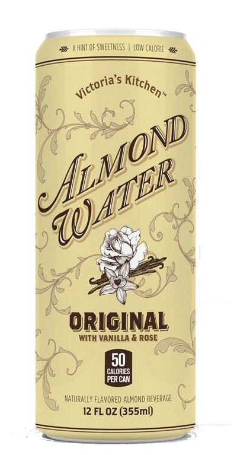

Informações Iniciais
Localidade: Encontrada na maioria dos níveis das Backrooms.
Pode estar em diversos tipos de recipientes, em canos, lagos, rios e nascentes;
Propriedades: Ótima fonte de hidratação, porém baixa em valor nutricional.
Tem sabor adocicado de amêndoas ou baunilha e
cheiro fraco de baunilha e água de rosas;
Utilização: Mata a sede, tem o poder de tratar doenças,
neutralizar efeitos de entidades, manter a saúde de modo geral.
Além disso, ajuda a manter o foco, principalmente ao enfrentar entidades.

Água de Amêndoa
[Artigo escrito com uma mescla entre as duas wikis (Wikidot e Wikifandom)]
ATENÇÃO!! Não consumir caso a água apresente qualquer aspecto diferente dos descritos neste artigo! E JAMAIS consumir a água de amêndoa do subnível 0Zero do nível Th3 Sh4dy Gr3y,
já que, no período noturno deste nível, toda àgua de amêndoa se torna Dor Líquida!!
A água de amêndoa é abundante nas Backrooms, existem teorias de que ela flui por todos os níveis, das mais diversas formas.
Possuem algumas variações (de cor de garrafa) e sabores.
Suas variações são quatro:
- Cinza: A mais comum, facilmente encontrada. Tem gosto adocicado e, dentre todas as variações, é a mais nutritiva;
- Azul: Uma das favoritas dos andarilhos. Não possui nenhuma diferença muito crônica, mas é preferível pelo fato de parecer muito com a água mineral das frontrooms;
- Verde: Geralmente as garrafas vêm congeladas. Com o melhor gosto dentre todas as variantes, possui também o maior nível de cafeína, sendo mais utilizada por aqueles que precisam ficar mais despertos;
- Vermelha: Conhecida pelo gosto amargo, sendo geralmente "evitada" pelos andarilhos. Possui efeito benéfico no sistema imunológico humano, já que, ao ser consumida, traz os efeitos de ter-se medicado com
antibióticos ou xarope para tosse.
Os sabores são diversos, mas não causam nenhum efeito adicional, são eles:
- Original;
- Hortelã e Alcaçuz;
- Coco;
- Rose Blossom (sabor mais forte de água de rosas);
- Sakura Breeze (flor de cerejeira infundida);
- Benção de Chocolate;
- Mandarina e Limão;
- Pera Francesa;
- Favo de mel;
- Lingonberry;
- Melão e Hortelã;
- Chá de gengibre;
- Banana Nirvana;
- Coco Nirvana;
- Maçã;
- Frutas tropicais;
- Framboesa.
Links
Wikifandom (em português)
Wikifandom (em inglês)
Wikidot (em português)
Wikidot (em inglês)